OTIUM OTIUM is the practice of deliberate leisure. In the classical sense, otium is not escape from work but time when attention returns to memory, landscape, and thought — without a utilitarian deadline.
We shape routes for lingering, not for checklist tourism. The goal is presence in a place rather than consumption of sights.
OTIUM is not a tour operator. It is an invitation to walk, pause, and leave a route unfinished if the light on a façade deserves another minute.
Ara Pacis Museum
Museo dell'Ara Pacis
Address: Lungotevere in Augusta | Style: Contemporary museum encasing ancient altar
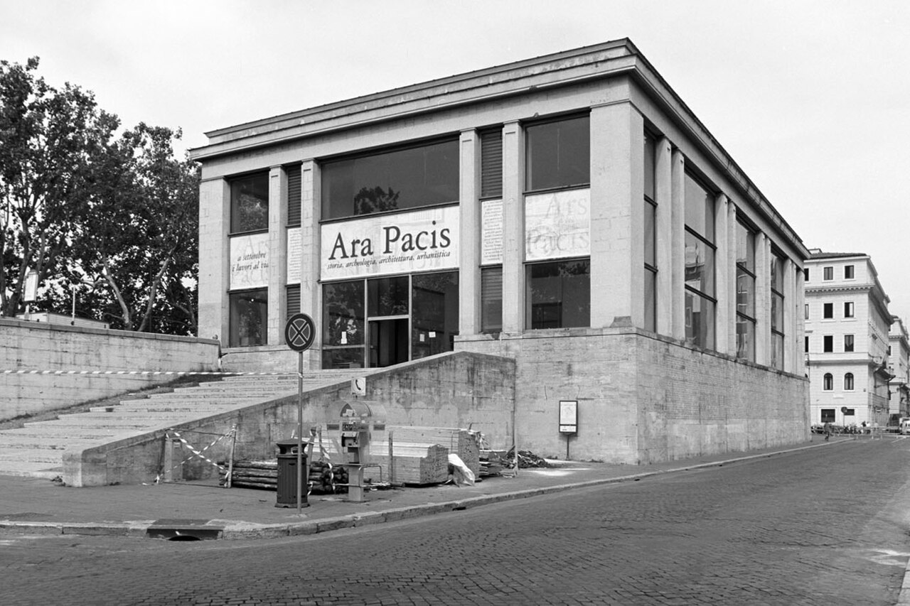
Richard Meier glass-and-stone pavilion sheltering Augustus' altar of peace reliefs.
Facts and details
Ticket separate from Forum passes.
Exterior angles photograph cleanly in morning side-light. History
Altar founded 9 BCE; 20th-century excavation and controversial modern wrapping.
Significance
Augustan propaganda in botanical friezes—telluric calm after civil wars.
Arch of Constantine
Arco di Costantino
Address: Beside Colosseum | Style: Late-antique triumphal arch
Imperial triumphal arch recycling earlier reliefs—political collage beside the amphitheatre.
Facts and details
Cross traffic on foot carefully toward the forum.
Read panels to spot Hadrianic hunting roundels reused. History
Dedicated 315 CE after Milvian Bridge victory; spolia study set for art historians.
Significance
Framing element in almost every classic Colosseum postcard.
Baths of Caracalla
Terme di Caracalla
Address: Via delle Terme di Caracalla | Style: Severan Roman baths
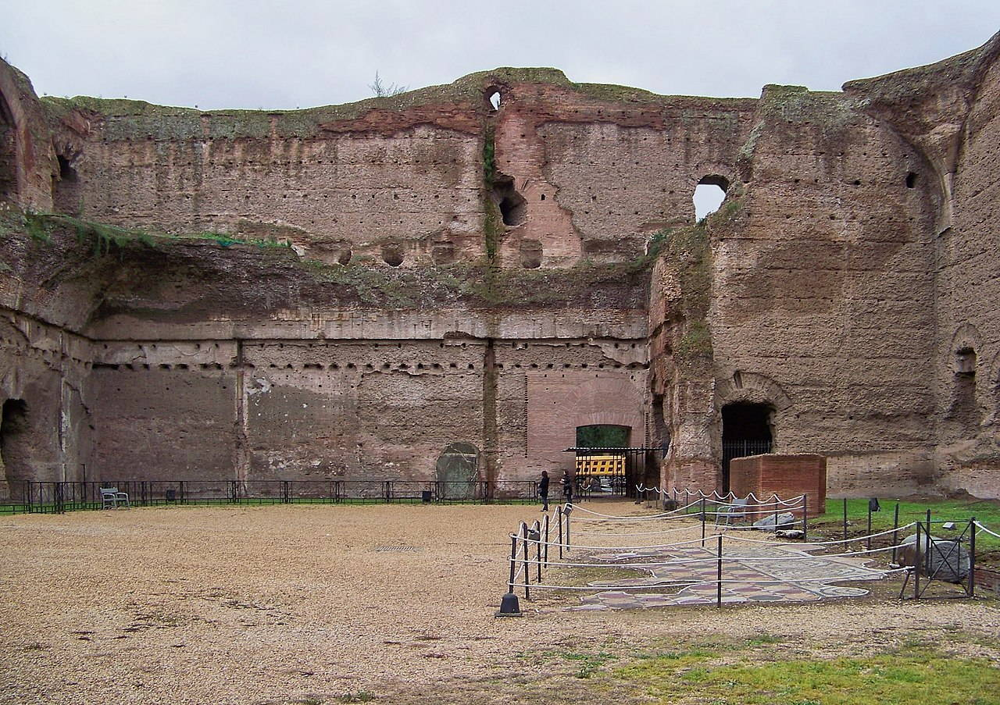
Imperial bath complex—vaulted halls, mosaic scraps, and summer opera staging.
Facts and details
Bring sun cover; little shade among high walls.
Night visits when opera runs feel otherworldly. History
Opened early 3rd century CE; water and spectacle on a neighbourhood scale.
Significance
Open-air ruins teach Roman infrastructure without museum glass.
Capitoline Hill
Campidoglio
Address: Campidoglio | Style: Renaissance civic replanning
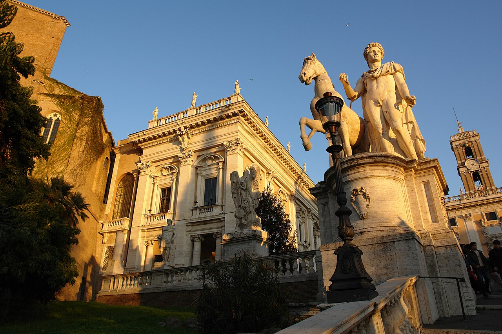
Michelangelo's trapezoidal piazza, equestrian Marcus Aurelius, and palazzi that host the city museum.
Facts and details
Museum ticket includes palazzo courtyards.
Bus groups peak late morning. History
Religious centre of archaic Rome; Renaissance replanning cleared medieval clutter.
Significance
Balcony over the Forum remains one of the best urban belvederes.
Castel Sant'Angelo
Castel Sant'Angelo
Address: Lungotevere Castello | Style: Ancient mausoleum with medieval bastions
Cylinder tomb of Hadrian turned fortress, prison, and museum—linked to the Vatican by the elevated passage.
Facts and details
Reduced crowds after sunset openings on some dates.
The angels' bridge is a separate photo subject. History
Antiquity through papal refuge in sieges; angel statue gives city its name anecdote.
Significance
Terrace views along the Tiber bend toward the dome.
Colosseum
Colosseo
Address: Piazza del Colosseo, Rome | Style: Ancient Roman concrete and travertine
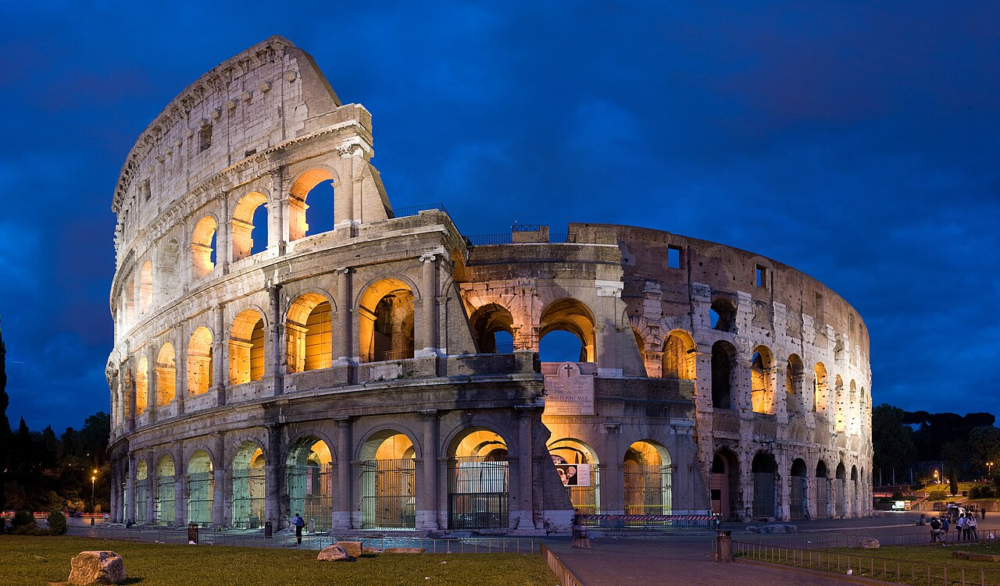
Huge Flavian amphitheatre—symbol of imperial Rome and still a reference for crowds, games, and engineering.
Facts and details
Combined tickets often include the Forum and Palatine.
Underground hypogeum visits require guided slots. History
Opened around 80 CE; quarry for builders in later ages; modern conservation balances access with structure stress.
Significance
UNESCO heart of the historic centre; evenings emphasize silhouette and lit arches.
Largo di Torre Argentina
Largo Argentina
Address: Campus Martius | Style: Republican Roman sacred architecture
Sacred area with Republican temple pediments below street level—cat sanctuary in the excavation pit.
Facts and details
Viewing platforms change with renovation phases.
Jewish Ghetto restaurants border the block. History
Temples A–D identified by debate; Caesar fell nearby in the Curia of Pompey's theatre.
Significance
Archaeology meets feline charity under traffic roar.
Mouth of Truth
Bocca della Verità
Address: Santa Maria in Cosmedin porch | Style: Ancient Roman sculptural drain cover
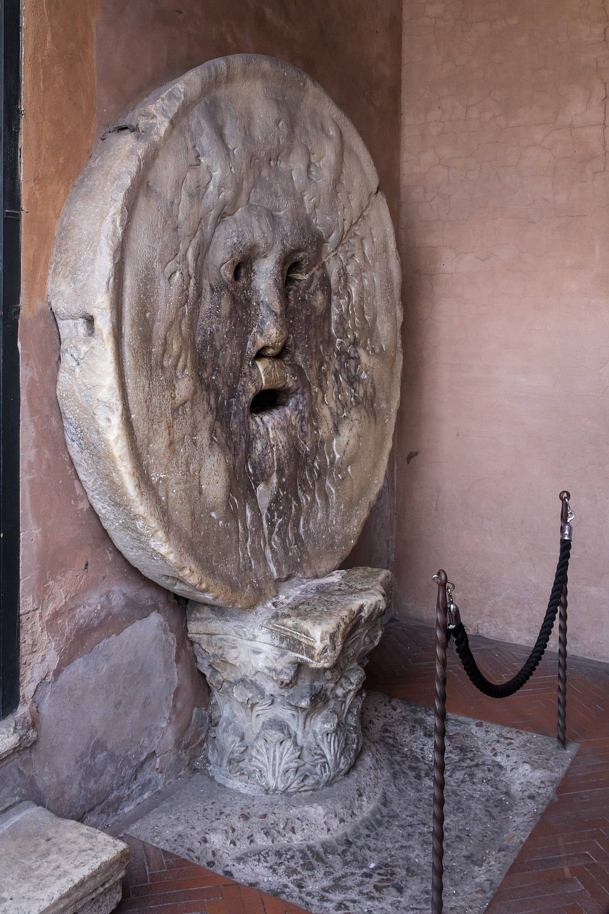
Ancient manhole mask carved as river god face—Hollywood made it an honesty gag.
Facts and details
Arrive early or wait in sun-exposed line.
Circus Maximus and Aventine are walking distance. History
Medieval transfer to the church porch; queue photos keep the myth alive.
Significance
Quick stop beside the tiny Cosmati-floored church.
Pantheon
Pantheon
Address: Piazza della Rotonda | Style: Ancient Roman / early Christian
Domed temple-turned-church with the world's largest unreinforced concrete dome and clear oculus.
Facts and details
Mass times suspend tourist circulation briefly.
Fountain in the square frames façade photos after rain. History
Hadrianic rebuilding on an earlier plan; Christian consecration saved it from spoliation.
Significance
Raphael's tomb and free entry for worship balance with tourist crowding at midday.
Piazza Navona
Piazza Navona
Address: Historic centre | Style: Baroque square
Stadium footprint turned Baroque salon—Bernini's Four Rivers versus Borromini's church façade story.
Facts and details
Cafés trade on the view; prices match location.
Sant'Agnese in Agone balances opposite the fountain. History
Ancient athletics track; Innocent X Pamphilj reshaped family palaces and fountains in the 1600s.
Significance
Street artists, Christmas market stalls, and night façades.
Ponte Sant'Angelo
Ponte Sant'Angelo
Address: Tiber near Castel Sant'Angelo | Style: Ancient Roman bridge / Baroque statues
Angels with instruments cross the bridge—Bernini workshop sculpture lining Hadrian's river crossing.
Facts and details
Vehicular traffic limited—mostly pedestrian joy.
Copy statues replaced weathered originals in museum care. History
Ancient core widened; Baroque promotion to pilgrimage décor.
Significance
Classic dusk alignment with castle and dome backdrop.
Pyramid of Cestius
Piramide Cestia
Address: Porta San Paolo, Testaccio | Style: Late-Roman eclectic / Egyptianizing
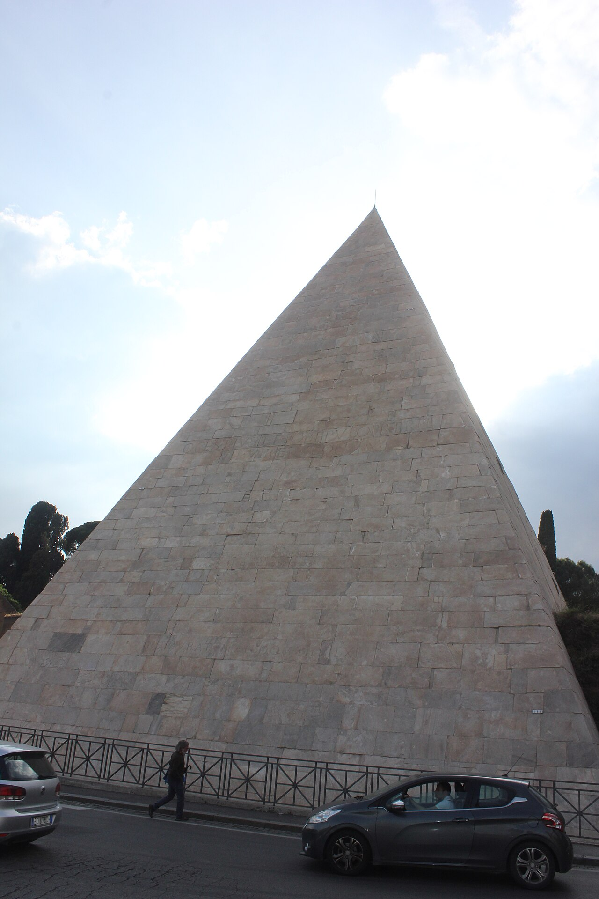
Narrow limestone pyramid wedged into the Aurelian Wall—Egyptomania of the late Republic.
Facts and details
Exterior only for casual visits.
Combine with Testaccio food scene or Ostiense murals. History
Tomb for magistrate Caius Cestius; incorporated into defensive circuit.
Significance
Strange skyline punctuation beside the Protestant Cemetery gate.
Roman Forum
Foro Romano
Address: Between Colosseum and Capitoline Hill | Style: Ancient Roman civic architecture
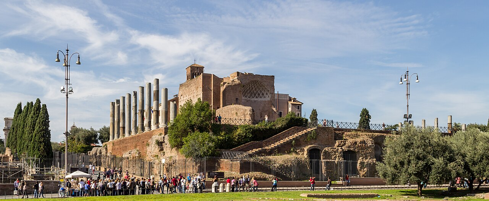
Civic core of ancient Rome—temple basements, basilica foundations, and worn Via Sacra paving.
Facts and details
Enter from Via dei Fori Imperiali gates or combined ticket routes.
Morning light throws long shadows across column stumps. History
Republican meeting place; imperial rebuilding; medieval reuse as pasture—hence 'Campo Vaccino'.
Significance
Layers from Rostra speeches to triumphal processions readable with a map.
Santa Maria in Trastevere
Basilica di Santa Maria in Trastevere
Address: Piazza di Santa Maria in Trastevere | Style: Medieval basilica
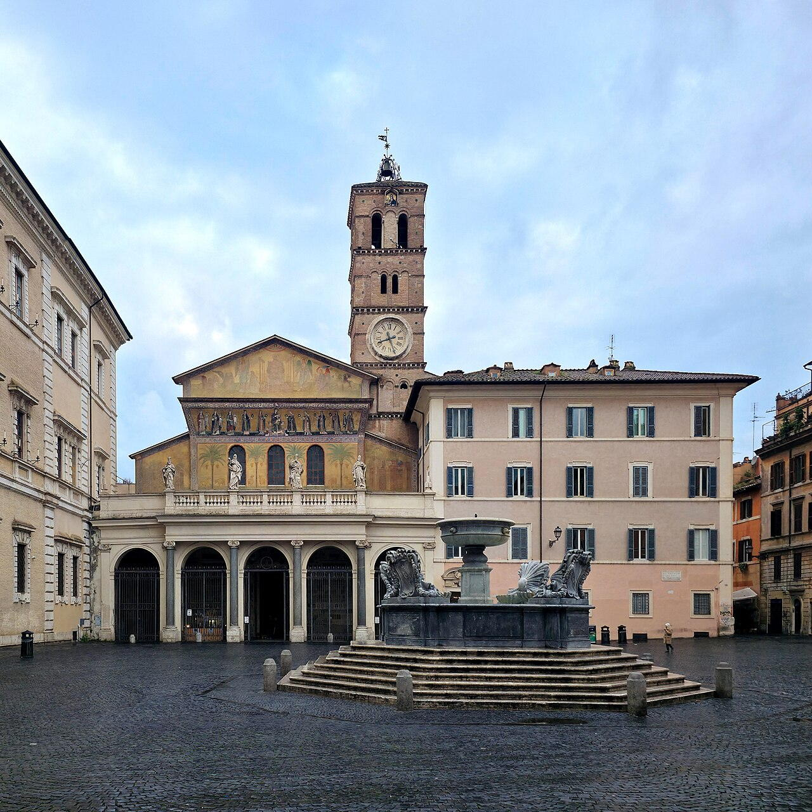
Early basilica famous for glittering 12th-century mosaics in the apse and façade crown.
Facts and details
Interior photography—check current signage.
Tram and cobbles approach from many angles. History
Legendary founding ties to pope Callixtus; medieval rebuild shapes today's nave.
Significance
Anchor of Trastevere's evening life beyond the portraits.
Spanish Steps
Scalinata di Trinità dei Monti
Address: Piazza di Spagna | Style: Rococo urban staircase
Wide staircase linking the French church of Trinità dei Monti to the Barcaccia fountain below.
Facts and details
Keats-Shelley House sits at the right foot.
Metro Spagna exits into constant motion. History
18th-century design; recent rules ban sitting on the steps—polite lingering standing only.
Significance
Fashion-week scenery and azalea ribbons in spring.
St. Peter's Basilica
Basilica di San Pietro in Vaticano
Address: Vatican City (Saint Peter's Square) | Style: Renaissance / Baroque
Renaissance-Baroque basilica whose dome dominates the skyline; this card stresses the exterior approach.
Facts and details
Climbing the dome is a separate ticket with tight stairs.
Official photo rules apply inside; façade images are less restricted. History
Bramante, Michelangelo, Maderno, and Bernini shaped successive campaigns across the 16th–17th centuries.
Significance
Major pilgrimage goal; dress modestly in the piazza and expect security queues.
Trajan's Column
Colonna Traiana
Address: Trajan's Forum | Style: Imperial Roman commemorative
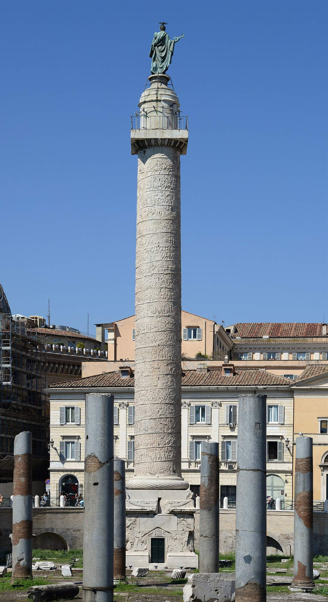
Spiral relief chronicle of the Dacian wars—engineering feat inside its own courtyard.
Facts and details
Street angle reveals upper bands better than distant views.
Combine with nearby Imperial Fora walkways. History
Dedicated 113 CE; base once held ashes of Trajan and Plotina.
Significance
Scholars still read the helical narrative like a strip cartoon of empire.
Trevi Fountain
Fontana di Trevi
Address: Piazza di Trevi | Style: Late Baroque fountain architecture
Baroque terminus of the Aqua Virgo acqueduct—Nicola Salvi's stone theatre of sea myths.
Facts and details
Stand back on Palazzo Poli steps for symmetrical shots.
Peak hours need patience; dawn is almost silent. History
Completed in the 1760s; coin-toss folklore funds charitable maintenance today.
Significance
Night floodlighting and cramped cobbles define the experience—pickpockets love the squeeze.
Victor Emmanuel II Monument
Vittoriano / Altare della Patria
Address: Piazza Venezia | Style: Nationalist neo-classical monumental
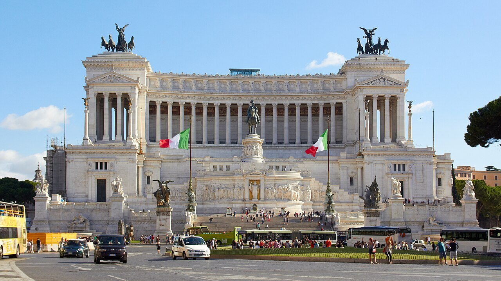
White marble 'wedding cake' honouring unified Italy—wide stairs, eternal flame, and museums within.
Facts and details
Bright sun bleaches detail—polarizing filter helps cameras.
Symbolic sentinels guard the Unknown Soldier—stay respectful. History
Early 20th-century nationalist monument; Romans debate aesthetics but use the panorama.
Significance
Elevator or stair access to terraces over the Forum grid.
Villa Borghese
Villa Borghese
Address: Pincian Hill / north of historic centre | Style: Italian landscape garden
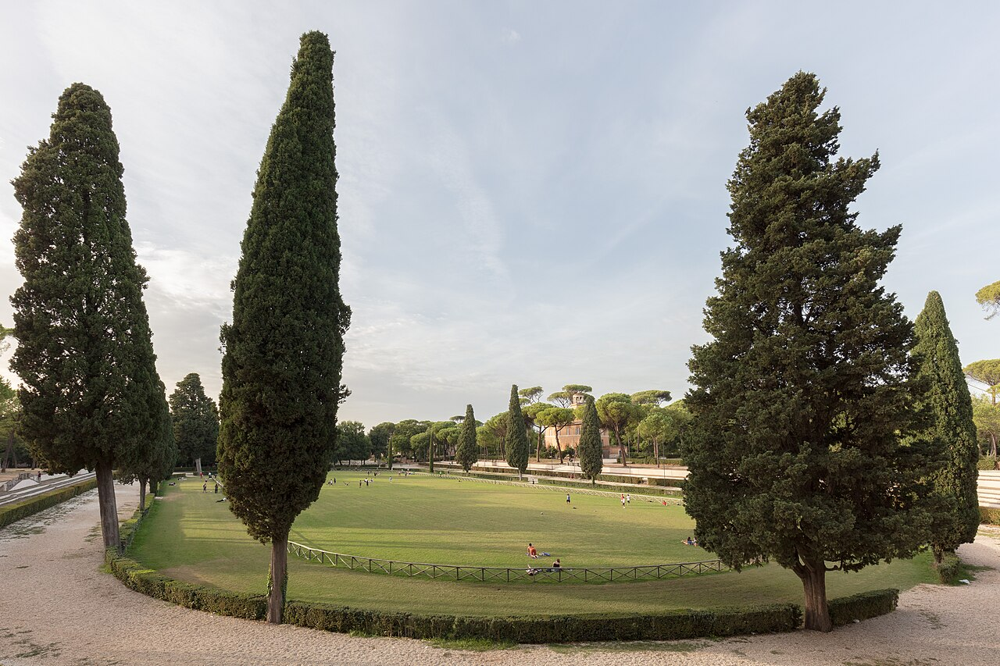
Park of shaded paths, fake ruins, lake rowboats, and the Borghese Gallery mansion.
Facts and details
Gallery slots are timed and sell out.
Bioparco zoo occupies part of the estate. History
Cardinal Scipione Borghese's 17th-century pleasure ground—opened gradually to public strolls.
Significance
Escapes heat; Piazza di Siena hosts equestrian events.